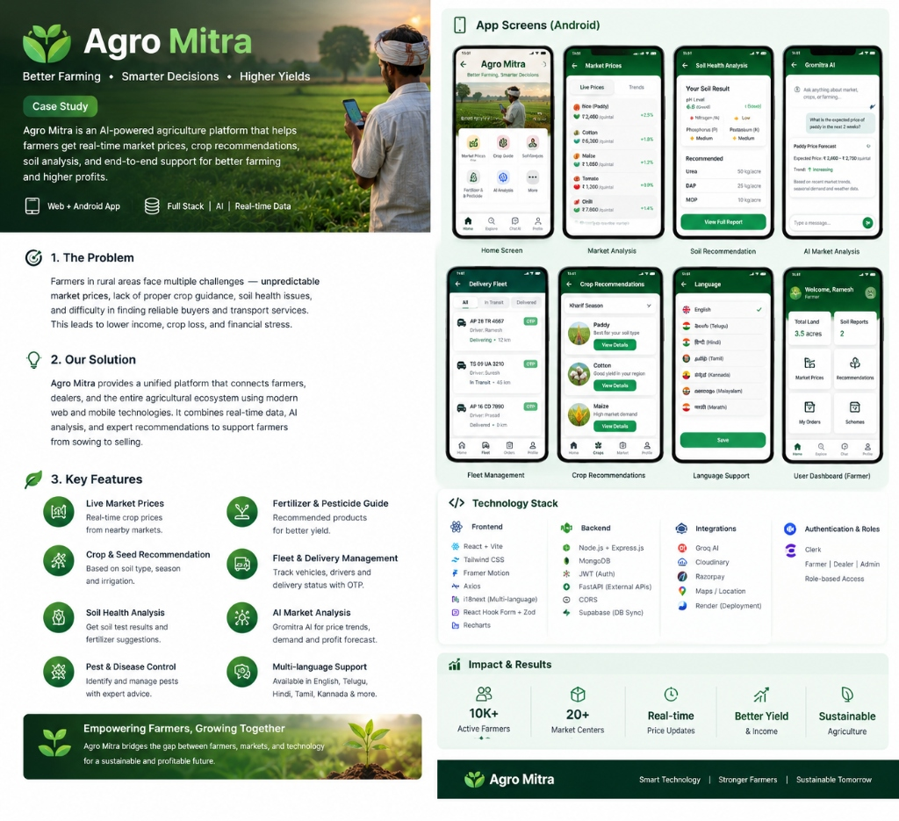

10K+
Active Farmers
20+
Mandi Centers
Real-Time
Price Feeds
OTP
Fleet Delivery
Featured Platform · AgriTech & AI
Agro Mitra
Better Farming • Smarter Decisions • Higher Yields
An AI-powered agriculture platform connecting farmers, dealers, and logistics. Combines real-time mandi prices, soil-matched crop advisory, Dijkstra route optimization, and multi-language support.
Role: Frontend Developer & UI/UX Contributor
Web & Android App (React + Vite)
1. The Problem
Farmers in rural areas face unpredictable market prices, lack of crop guidance, soil deterioration, and difficulty finding reliable buyers and transport services, leading to lower income and post-harvest crop loss.
2. Our Solution
A unified web and mobile platform connecting farmers, dealers, and transport. Combines real-time mandi data, Gromitra AI analysis, and Dijkstra shortest-path routing from sowing to selling.
- Live Market Prices: Real-time crop prices across nearby regional mandis.
- Crop & Seed Guidance: Personalized advice based on soil type and season.
- Soil Health Analysis: N-P-K nutrient tracking & fertilizer dose cards.
- Fleet & Delivery Management: Live vehicle tracking with OTP security.
- AI Market Analysis: Gromitra AI price trend forecasting.
- Multi-Language: English, Telugu, Hindi, Tamil, Kannada, Marathi.
Frontend:
React + Vite
Tailwind CSS
Framer Motion
i18next
Recharts
Backend:
Node.js + Express
MongoDB
FastAPI
Supabase Sync
JWT
Cloud & AI:
Groq AI
Clerk Auth
Cloudinary
Razorpay
Render